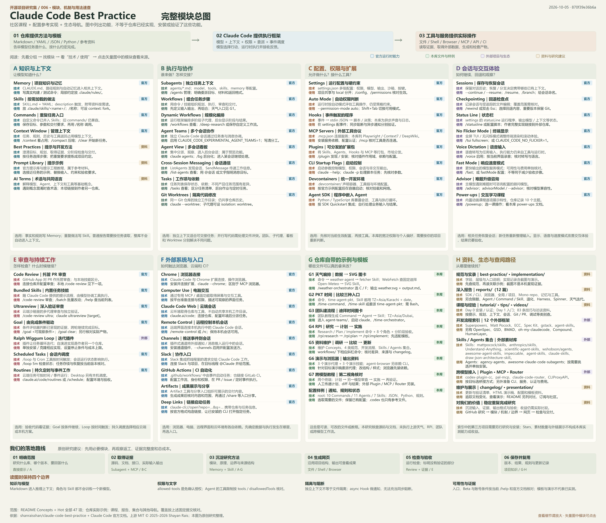

把做法变成可复用流程
保存项目知识、封装重复任务、分配子任务、连接工具，并明确输出与验证步骤。
CLAUDE-CODE-BEST-PRACTICE
社区学习资料、配置模板与工作流参考实现。用项目记忆、技能、任务分工与工具连接组织开发，把有效做法保存下来。
47 项功能主题 · 8 组 63 个条目 · 每项附机制、用法与来源

保存项目知识、封装重复任务、分配子任务、连接工具，并明确输出与验证步骤。
知识与上下文、执行与协作、配置权限与扩展、会话体验、审查与持续工作、外部系统、本库示例、资料导航。
代码研究与审查、复杂功能实施、团队交接、资料维护，以及浏览器、API 与协作平台接入。
沉淀知识与有效步骤，减少遗漏，让结果可核对；结合适配、维护和执行成本判断实际收益。
说明怎么做，提供可加载的指令、配置与示例。
管理上下文、启动子任务、调用工具、处理权限和事件。
实际读取、修改、运行和查询；结果反馈给模型。
02 / 能力地图
把目录结构、构建与测试命令、开发约定写进 CLAUDE.md；按目录组织规则，用记忆保存可重复使用的经验。
# 项目约定
构建：npm run build
测试：npm test
新增功能沿用现有目录与命名。文字规范进入模型上下文；强制操作限制需要权限配置或能阻断的事件检查。
查看仓库依据 ↗这里的六项用于解释职责。当前 Claude Code 已将自定义 Commands 并入 Skills，旧的 .claude/commands/ 文件继续兼容；“Command → Agent → Skill”是组织方式。官方说明 ↗
03 / 工作原理
Markdown 文件提供任务知识；Claude Code 把相关指令、源码和工具结果放进上下文，驱动一次次推理与执行。点击下面的步骤，查看各环节的职责。
例如：修复登录失败，保留现有接口，相关测试通过。清楚的目标和验收条件，能帮助后续每一步围绕同一个任务展开。
先暴露名称和触发描述，使用时加载完整做法，参考资料按需读取。子代理的 skills 字段也可以预加载技能说明。
研究和搜索日志留在子任务里，主会话接收结果。并行修改同一工作区时，仍需考虑文件冲突。
“必须先测试”是文字要求。程序权限、阻断脚本和实际测试结果，分别承担限制、检查与验证。
以“检查本次改动是否影响已有行为”为例。流程文件先成为模型的上下文，模型产生工具调用，再由运行时执行。下方是简化解释，省略了内部系统指令。
用户给出检查目标与改动范围。需要明确是当前未提交修改，还是某个提交、分支或 PR，才能取得正确材料。
检查当前未提交的修改。
说明行为变化、可能的问题，
以及哪些检查已经执行。模型看到的是组织后的文字和工具结果；工具、独立上下文、权限检查与事件调度由运行框架提供。仓库对运行框架的分析 ↗
04 / 真实工作流
仓库的 /weather-orchestrator 示例固定查询迪拜温度：先取得用户偏好，再委派获取数据，最后生成文件。下面逐步解释当前源码里的实际流程。
命令要求先用 AskUserQuestion 取得摄氏或华氏的选择，然后把单位传给天气子代理。
/weather-orchestrator
↓ AskUserQuestion
unit = Celsius | Fahrenheit源码阅读结论：当前 weather-agent 明确调用 Skill(weather-fetcher)，再由技能指令驱动 WebFetch。部分编排文档仍描述为仅预加载；本页以固定版本的实际文件为准。天气工作流本次未执行。
先评估需求的可行性，生成产品、体验与技术计划，再按阶段实现、测试、审查和取得用户验收。
产出：RESEARCH.md · PLAN.md · 实施记录
RPI 模板与命令 ↗研究其他 GitHub 工作流仓库，整理流程和组件数量，比较变化后更新本库的 README。
产出：研究结果 · 差异记录 · 更新建议
资料维护命令 ↗教程展示 Claude Code 制定计划，另一模型核对计划与实现，再返回开发会话继续工作。
产出：修订计划 · 审查发现 · 验证记录
跨模型使用教程 ↗05 / 场景与价值
例如提交前检查、变更说明、固定格式的代码审查。把稳定的做法沉淀为一个 Skill 或 Command。
价值来自工作方式的改进。实际收益取决于任务、模型、工具与验证质量；本研究没有测量生产效率提升或错误率下降。
06 / 如何借鉴
记录构建、测试、目录约定和验收方式，让新会话能找到正确的工作入口。
从仓库挑选相关模板，换成自己项目的输入、操作步骤、工具和交付要求。
检查实际产出；任务足够复杂时再加入子代理、外部工具或阶段验收。
07 / 选用与实践
先判断触发方式，再考虑上下文、工具和验收。下方取舍属于本页研究建议。
把稳定步骤、参考资料与输出要求保存下来；用户通过 /名称 主动调用，也可按描述由模型选用。
提炼触发条件与验收标准，并随项目约定维护。
| 选项 | 触发与上下文 | 最适合解决 |
|---|---|---|
| 直接提示 | 一次请求，使用当前上下文 | 单次解释、小范围修改、输入已齐全的任务 |
| CLAUDE.md / rules | 会话启动或匹配相关路径时加载 | 构建命令、目录约定、跨任务持续使用的知识 |
| Skill / Command 入口 | 显式调用或按描述发现；默认在当前会话使用 | 重复步骤、领域说明、模板与脚本；也可配置 fork |
| Subagent | 被委派任务；使用独立上下文 | 大量检索、专门审查、可明确交接的子任务 |
| Hook | 匹配的生命周期事件触发 | 事件记录、通知、格式化或经验证的阻断检查 |
| MCP | 运行时连接服务，模型调用工具 | 把外部系统的操作和数据接入任务 |
当前 Commands 与 Skills 已合并，旧命令目录继续兼容。新建示例采用 Skill 格式，三层编排适合需要分工的任务；简单任务可以直接完成。官方职责对照 ↗
这是本页编写的学习模板，借鉴仓库的组织方式；未在 Claude Code 中运行。示例文字不替代权限设置。
your-project/
├── CLAUDE.example.md
├── DELIVERY-CHECKLIST.md
├── README.md
└── .claude/skills/review-change/
└── SKILL.md实际使用前，先填写项目命令与路径。
记录项目结构、现有构建与测试命令，以及验收方式；按项目事实补齐后合并到已有说明。
# 项目约定
构建：填写项目当前的实际命令
测试：填写项目当前的实际命令
审查输出：行为变化、具体发现、验证证据
缺少环境或没有运行时，明确记录原因。由用户显式调用，先确定范围，再读取规则和差异，核对问题及检查证据。
name: review-change
description: 审查给定范围的代码变更与验证证据
disable-model-invocation: true
取得明确的 diff 范围 → 读取相关代码
→ 核对具体发现 → 汇总检查与未验证项用可复查的输入、文件位置和检查结果判断是否完成；保留没有执行的部分。
- 修改范围与用户要求是否一致？
- 发现是否有具体文件位置与依据？
- 检查命令、结果或未运行原因是否记录？
- 结论是否区分已验证与仍待确认？记录重复输入、临时补充与遗漏项，检查模板是否减少相同问题。
比较需求覆盖、具体证据、未验证项与实际返工，复查每条发现。
一起记录首次适配、维护、模型使用、工具执行和子任务协调成本。
比较时尽量保持任务类型、代码范围、模型和验收标准一致。本页提供观察维度，不提供未经测量的效率或准确率结论。
项目整体约定放根目录，组件规则按工作路径组织。Skills 的触发与预加载需要分别判断。
Skill 的 allowed-tools 是免确认授权。实际限制需核对权限规则、子代理工具配置与阻断逻辑。
本库 Hooks 配置为异步声音与日志处理。异步执行不能作为阻止工具行为的检查点。
知识组织示例 · allowed-tools · 仓库事件配置 · 异步 Hook 边界
与当前工作路径相关的项目指令会由运行时加载。普通研究报告与外部链接，需要按任务读取；技能通常只在相关或调用时加载完整内容。
提示提供目标与知识。运行框架还负责实际工具、上下文分工、权限和事件调度。单次小任务可以直接提示；重复或复杂任务再按需要组织这些能力。
其中的任务知识与检查方法可以改写复用。目录、字段、触发方式、工具名称和权限语义属于具体工具，迁移时需要逐项核对。
完成状态说明任务走到了交付环节。代码行为需要测试、运行观察、审查与验收证据支持，文件和结论应能回到实际输入。
08 / 证据与来源
上游提交固定于 2026.10.05。
代码链接指向这份快照。
本页为原创研究与交互解释。
未执行 Claude Code 工作流。
上游许可已核查。
本页保留作者与来源归属。